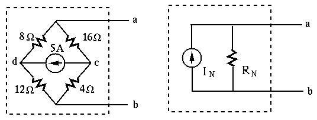
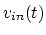
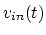
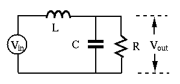
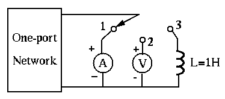
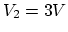
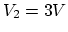

Instructions
The Problems

Solution: When the current source is open, the resistance between a and b is . To find the short-circuit current from a to b, realize that the total current of 5A goes through the parallel connection of and resistors and then the parallel connection of and resistors. The currents through the and resistors are, respectively, and , and due to KCL at node a, the current from a to b is .
The values of  ,
,  and
and  of the circuit below are such that
,
of the circuit below are such that
,
 , and also
, and also  . Find the
phase difference between the input voltage  and the output
voltage
. Find the
phase difference between the input voltage  and the output
voltage  . Which of the two voltages is leading? by how much?
. Which of the two voltages is leading? by how much?

Solution:
The one-port network in the circuit below is a resistor network with some
energy sources. When the switch is in position 1, the ideal ammeter reads
3A, when the switch is in position 2, the ideal voltmeter reads 9V. Find
the output voltage  across the inductor with after
the switch is turned into positon 3 at
across the inductor with after
the switch is turned into positon 3 at  .
.

Solution:
In the circuit below, ,  , , ,
, , ,
 , , and before the switch S closes at
, , and before the switch S closes at  , the circuit is
already in steady state. Find the current
, the circuit is
already in steady state. Find the current  through
through  for
for  .
(Hint: as current through an inductor cannot change instantaeously, the
inductor can be treated as a current source right after the switch is closed.)
.
(Hint: as current through an inductor cannot change instantaeously, the
inductor can be treated as a current source right after the switch is closed.)

Solution: